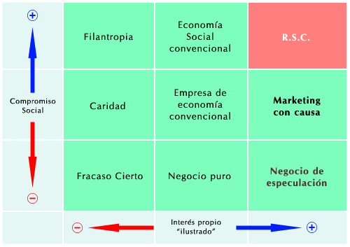

3.- los antecedentes históricos de la responsabilidad social coorporativa
Los antecedentes históricos de la RSC de las empresas se remontan a siglos pasados y se encuentran en los propios orígenes de las organizaciones que conjugaron capital y trabajo para generar riqueza y beneficio, aunque en el camino los abusos sobre los trabajadores hayan sido notorios.
Todos recordamos las condiciones de explotación a la que los trabajadores se vieron sometidos en el período de la Revolución Industrial, por no remontarnos a épocas más lejanas en donde la esclavitud fue la base de la economía de las sociedades "modernas". Pero es precisamente en tales entornos de dureza extrema en el que surgen líderes empresariales que actúan para cambiar las cosas favorablemente. Cabría destacar esta actuación como un desafío no conformista de algunos empresarios y de otros como forma de obtener el reconocimiento y legitimación a su ascenso social, emprendieron cambios sustanciales en su quehacer empresarial.
En EEUU la educación constituyó el núcleo de intervención y fue la principal beneficiada. Así, en el origen de muchas grandes universidades privadas norteamericanas como Harvard, Yale, Cornell, Princeton, Duke, Columbia, etc., nos encontramos con las aportaciones de importantes empresarios del momento. Pero también en las artes y humanidades, el apoyo y patrocinio de la industria resultó decisivo, creándose grandes centros como el Metropolitan Museum o la Metropolitan Opera House de Nueva York. Sin embargo, los críticos a las donaciones empresariales tanto en EEUU como en Europa suelen afirmar, con razón, que los recursos se concentran, en general, en proyectos de prestigio y de gran repercusión pública, en perjuicio de sectores locales más necesitados.
No obstante, era escaso el componente utópico en estos filántropos norteamericanos, motivados totalmente por la ganancia. Rockefeller o Ford no tuvieron escrúpulos en sus actividades comerciales, aunque luego dedicaran su riqueza a la creación de fundaciones caritativas con grandes activos.
Pero será en EEUU donde surja la expresión de responsabilidad social corporativa en los años cincuenta, mucho más tarde sin embargo se traslada a Europa, ya en la década de los noventa.
El contexto político del concepto de RSC da su primer paso en 1993 cuando el presidente de la Comisión Europea, Jaques Delors, invita a los empresarios europeos a implicarse activamente en la lucha contra la exclusiónsocial.
En la Cumbre de Lisboa en marzo de 2000 se hace un llamamiento especial a la responsabilidad social de las empresas, forma parte de la estrategia de empleo que tiene como objetivo hacer de la UE “ la economía mas competitiva y dinámica del mundo, basada en el conocimiento, en el desarrollo sostenible con los mejores empleos y la mayor cohesión social”.
En enero de 1999 el secretario general de las Naciones Unidas propuso por primera vez la idea de Global Complact o Pacto Mundial ante el Foro Económico y Mundial de Davos, con el objetivo de impulsar la “adopción de principios y valores compartidos que den un rostro humano al mercado mundial” promoviendo la construcción de pospilares sociales y ambientales necesarios para mantener la nueva economía mundial.
Matriz diferencial entre
Responsabilidad Social y otras situaciones "empresariales"

Después los escándalos surgidos alrededor del mundo por abuso de las empresas sobre todo en el ámbito laboral y fiscal durante los años 80, se iniciaron movimientos sobretodo en Estados Unidos, sobre la lucha por los derechos y el papel de la empresa en la sociedad. Aunque muchas otras empresas ya seguían los principios de la RSE, por ejemplo The Body Shop, Ben and Jerry Ice Cream Company, etc., otras optaron por implementar el modelo de la Fundación, donde la compañía aportaba los fondos pero se desentendía de evaluar la gestión interna de la misma.
Hoy es habitual que al amparo de la presión social, y debido a diversas disposiciones legales o normas voluntarias, que la mayoría de grandes empresas financien y organicen Fundaciones Sociales para canalizar medios y recursos de RSC.
Detrás de cualquier importante proyecto o actividad cultural o deportiva aparecen sus empresas patrocinadoras e incluso detrás de exitosos programas municipales de rehabilitación urbana arquitectónica hay empresas que los apoyan. Incluso se puede observar como la publicidad está cambiando sutilmente esquemas tradicionales para destacar las especiales contribuciones a la sociedad de determinadas empresas.
Aunque el ánimo de lucro o beneficio es el eje fundamental por el que se rigen las empresas en una economía de mercado, su dimensión social adquiere un creciente peso diferencial. Además, hay que tener en cuenta que existe una importante economía social en donde la finalidad esencial no es el beneficio sino la calidad del servicio y las prestaciones sociales, asumidas por organizaciones privadas y amparadas en ocasiones por el propio Estado para cubrir necesidades esenciales.
También están las organizaciones, como las Cajas de Ahorro, cuya finalidad social les es exigida. No obstante, tal finalidad nunca debe ser obstáculo para que la eficiencia en la gestión sea pieza clave del servicio y de la pervivencia de las propias organizaciones.

¡Enhorabuena! has llegado al final del Tema 3, para poder realizar la autoevaluación asegúrate de haber
revisado bien la teoría
y pulsa el botón de Marcar Tema Completado.